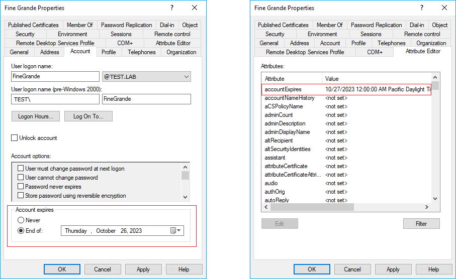

Question
Reports in Netwrix Auditor Password Expiration Notifier (PEN) state users are to expire sooner than what is stated in Active Directory. What could be causing this?
Answer
Password Expiration Notifier may include data on expiring accounts, if enabled. If the account is to expire sooner than the password, the account expiration date will be stated in the report instead of the password expiration date. Refer to the following steps to either track both expiring passwords and accounts or disable the option to track expiring accounts:
-
In your Start menu, select Netwrix Auditor > Netwrix Auditor Password Expiration Notifier.
-
Select the monitoring plan, and click Edit.
-
Select the Advanced tab, and either check or uncheck the Include data on expiring accounts.
-
The next report will be affected.
To verify the account expiration date, refer to the following steps:
-
Open Active Directory Users and Computers either via Server Manager > Tools, or the Search bar.
-
Right-click the user, and select Properties.
-
The account expiration date is provided in the Account tab > Account expires, and the Attribute Editor tab > accountExpires attribute.
